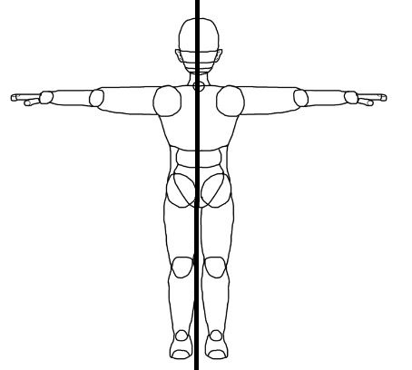
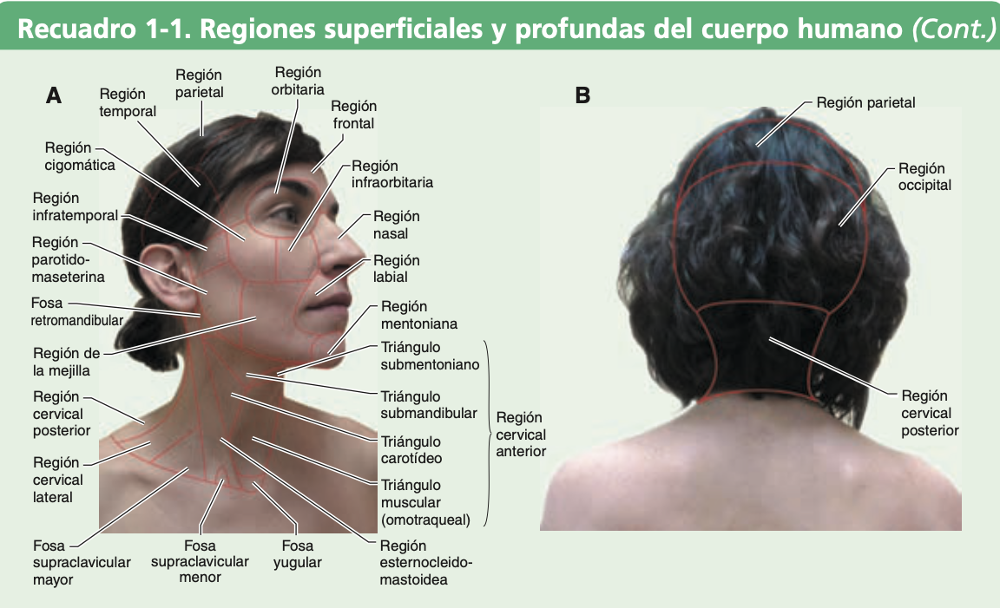
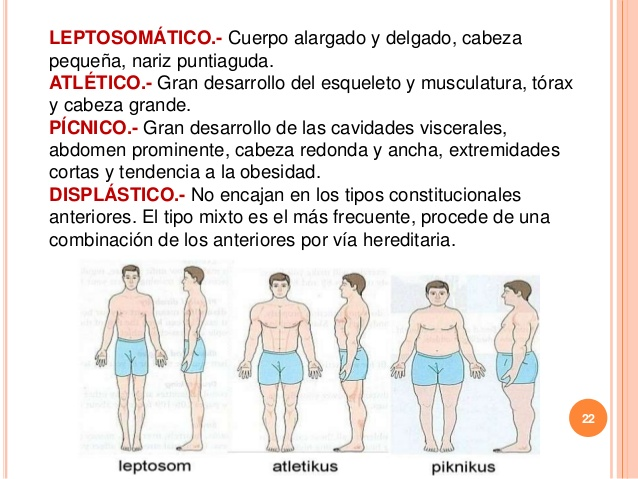
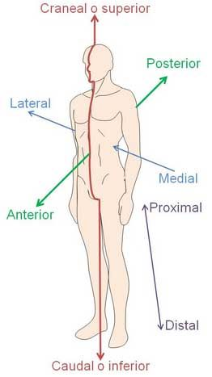
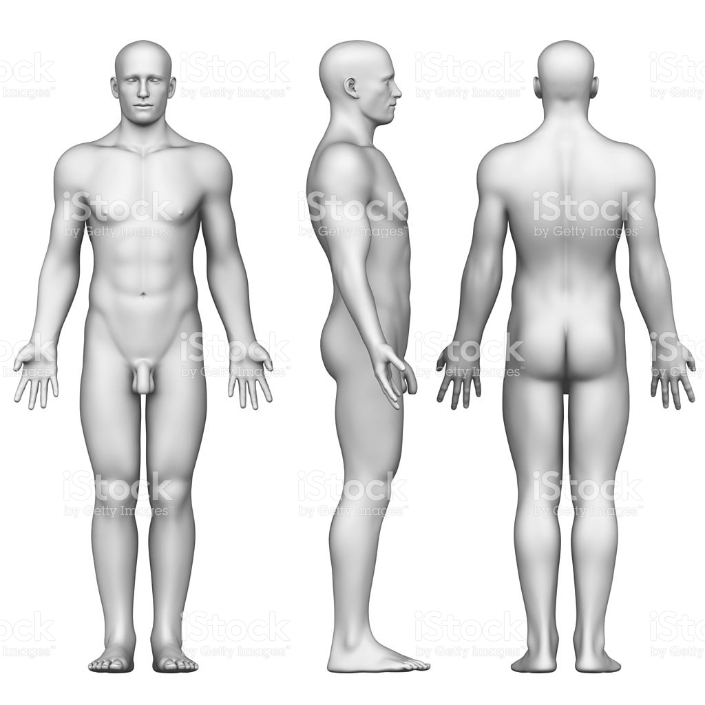
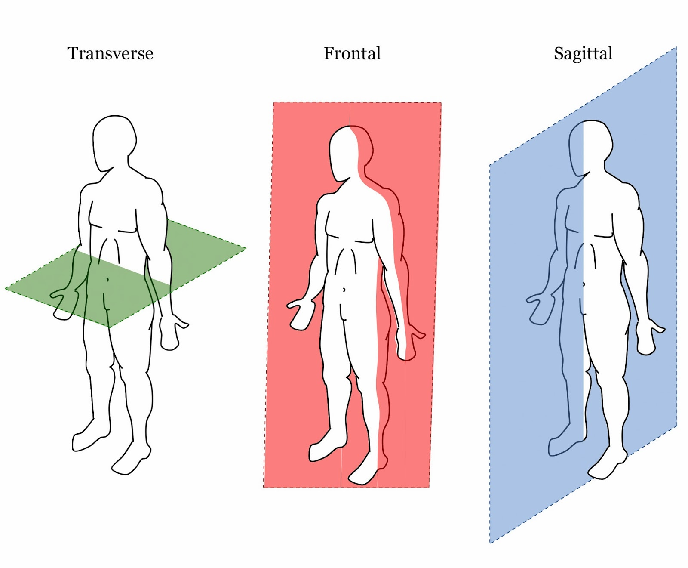
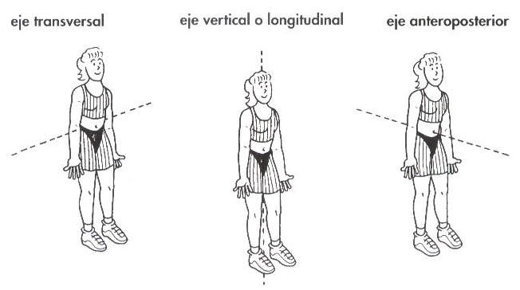

ClinicusMed · Dossiê Clinicus — Padrão de Excelência
Nv. 1
0 XP
🎯 O que você vai conseguir fazer depois desse capítulo
Definir Anatomia e suas 3 abordagens (descritiva, topográfica, funcional)
Explicar a importância da terminologia anatômica padronizada
Reconhecer que o corpo humano NÃO é perfeitamente simétrico
Descrever a organização hierárquica do corpo (células → tecidos → órgãos → sistemas)
Aplicar corretamente os termos de relação e comparação (anterior/posterior, medial/lateral, etc.)
Descrever a Posição Anatômica padrão
Diferenciar os planos de corte e eixos do corpo, e associar cada eixo ao plano em que ocorre o movimento
Nomear as regiões do corpo e as 5 cavidades, e reconhecer os tipos constitucionais
📖 O que é Anatomia?
🟢 Definição (origem grega): "anatomé" = cortar através, dissecar. Anatomia é a estrutura morfológica de um organismo.
🟢 Definição alternativa: ciência que estuda a estrutura ou morfologia dos organismos.
🗣️ Terminologia Anatômica
A anatomia possui uma linguagem PRÓPRIA, destinada a facilitar a comunicação e compreensão entre profissionais de saúde ao redor do mundo. Esses termos técnicos servem pra DEFINIR, LOCALIZAR e ORIENTAR cada parte do organismo.
💭 Epônimos: muitos anatomistas deixaram seu nome ligado a alguma estrutura (ex: trompa de Eustáquio = tuba auditiva; fundo de saco de Douglas = escavação reto-uterina; canal de Hunter = canal dos adutores) — são muito numerosos em anatomia, embora a terminologia moderna prefira termos descritivos padronizados.
⚖️ Simetria — Uma Ideia Equivocada

Assimetria de estruturas internas do corpo humano
📌 O corpo humano NÃO é formado por duas partes perfeitamente simétricas (uma direita e outra esquerda) — apesar da aparência externa sugerir simetria, órgãos internos e outras estruturas rompem essa simetria.
🔬 As 3 Abordagens da Anatomia
Abordagem
O que faz
Descritiva
Descreve e mostra a organização das estruturas
Topográfica
Expõe a disposição recíproca entre estruturas nas diferentes regiões
Funcional
Indica as relações entre forma e função
🧠 Mnemônico: "D-T-F" — Descreve, Topografa, Funciona — as 3 lentes pra estudar qualquer estrutura anatômica.
Por partes ou segmentos: cabeça, pescoço, tronco (tórax, abdome, dorso, pelve/períneo) e os pares de membros superiores e inferiores — cada parte se subdivide em áreas e regiões
Clínica (aplicada)
Enfatiza o que importa para a prática médica; inverte o raciocínio: em vez de “a ação deste músculo é…”, pergunta “como se manifestaria a ausência de atividade deste músculo?” / “qual nervo, se lesado, causaria anestesia nesta área da pele?”
💭 Dados físicos de uma estrutura: dimensões (comprimento, largura, espessura), peso, cor e consistência (sólida, líquida, gasosa e plasma). Formas descritivas: geométricas (cubo, pirâmide, esfera…), da natureza (árvore, fruto, ovo…) e artificiais (foice, martelo, bigorna, estribo).
👤 O Corpo Humano — Organização Hierárquica
O corpo humano possui mais de 50 TRILHÕES de células (na aula: “cincuenta billones”, isto é, 50 × 10¹²). Estas se agrupam em TECIDOS, que se organizam em ÓRGÃOS, e estes em 8 APARELHOS OU SISTEMAS:
Locomotor (muscular e ósseo)
Respiratório
Digestivo
Excretor
Circulatório
Endócrino
Nervoso
Reprodutor
📌 Hierarquia: Células → Tecidos → Órgãos → Sistemas/Aparelhos (8 no total). A célula é a unidade estrutural; tecido = conjunto de células de diferenciação semelhante que funcionam de forma integrada; órgão = unidade anatômica delimitada formada por vários tecidos; sistema = conjunto de órgãos que cumprem uma função complexa.
⚠️ Divergência: (1) o slide diz “más de cincuenta billones” — em espanhol, billón = 10¹² = trilhão em português; “50 bilhões” (10⁹) seria erro de tradução. Estimativas modernas ficam em torno de 30–40 trilhões, mas a prova segue a aula: mais de 50 trilhões. (2) A aula lista 8 sistemas; muitos livros (Moore, Latarjet) separam mais: tegumentar, linfático/imune, órgãos dos sentidos, urinário e genital em vez de “excretor” e “reprodutor”. Se a questão citar a aula, responda 8.

Regiões superficiais da cabeça e do pescoço (Moore)
🗺️ Regiões e Cavidades do Corpo
Corpo principal: cabeça, pescoço e tronco (tórax, abdome, dorso e pelve/períneo) + membros superiores (ombro, braço, cotovelo, antebraço, punho, mão) e membros inferiores (coxa, joelho, perna, tornozelo, pé).
5 cavidades do corpo humano (aula):craniana, espinal (vertebral), torácica, abdominal e pélvica. O diafragma separa a cavidade torácica da abdominal.
No tronco: tórax (limite inferior = diafragma), abdome e pelve (delimitada pelo plano da abertura superior da pelve).
🧠 Mnemônico: as cavidades descem da cabeça à pelve: Cabeça (craniana) → Coluna (espinal) → Tórax → Abdome → Pelve.
⚠️ Divergência: a aula conta 5 cavidades; Moore agrupa abdome e pelve numa só cavidade abdominopélvica (contínuas, sem barreira física) e fala em 4 grandes cavidades (craniana, vertebral, torácica, abdominopélvica). Se a pergunta for “quantas cavidades”, siga o número da aula (5) e cite as duas formas se for discursiva.
🏋️ Tipos Constitucionais

Biotipos constitucionais
Classificação morfológica dos biotipos corporais. Na figura da aula: longilíneo, brevilíneo e normolíneo. A classificação clássica de Kretschmer (slides) descreve 4 tipos:
Tipo
Características
Associações citadas na aula
Leptossômico (≈ longilíneo)
Corpo alongado e delgado, cabeça pequena, nariz pontiagudo
Tímido, nervoso; maior frequência de tuberculose, úlcera gástrica e esquizofrenia
Atlético (≈ normolíneo)
Grande desenvolvimento do esqueleto e da musculatura, tórax e cabeça grandes; bem proporcionado
Tendência à atividade física; maior frequência de epilepsia
Pícnico (≈ brevilíneo)
Grande desenvolvimento das cavidades viscerais, abdome proeminente, cabeça redonda e larga, extremidades curtas, tendência à obesidade
Sociável; psicose maníaco-depressiva, diabetes, doenças da vesícula biliar, hipertensão e arteriosclerose
Displástico
Não se encaixa nos anteriores; o tipo misto é o mais frequente (combinação hereditária)
—
⚠️ Divergência: longilíneo/brevilíneo/normolíneo (figura) e leptossômico/pícnico/atlético (Kretschmer) são nomenclaturas equivalentes, mas não idênticas — a aproximação “atlético ≈ normolíneo” é aproximada. As associações a doenças são tendências históricas, não critério diagnóstico. Em outros livros aparece também Sheldon (ectomorfo, mesomorfo, endomorfo).
🧭 Termos de Relação e Comparação

Termos de relação: anterior/posterior, superior/inferior, medial/lateral, proximal/distal
Termo
Significado
Anterior (ventral)
Em posição adiantada/precedente
Posterior (dorsal)
Atrás, com posterioridade de lugar
Superior
Localizado acima (prefixo supra)
Inferior
Localizado abaixo (prefixos infra, sub)
Craneal
Mais próximo do extremo superior do tronco (rumo ao crânio)
Caudal
Mais próximo do extremo inferior do tronco (do latim "cauda" = cauda)
Medial
Rumo ao plano sagital mediano
Lateral
Afastado do plano sagital mediano
Proximal
Mais perto do tronco ou ponto de origem
Distal
Mais longe do tronco ou ponto de origem
Superficial
Mais perto da superfície
Profundo
Mais longe da superfície
Externo
Mais afastado do centro de um órgão (prefixo exo)
Interno
Mais próximo do centro de um órgão (prefixo endo)
Ipsilateral (homolateral)
Do mesmo lado do corpo
Contralateral
Do lado oposto do corpo
Côncavo
Curvado para dentro
Convexo
Curvado para fora
⚠️ Divergência: a aula iguala anterior = ventral e posterior = dorsal, o que vale para o tronco e a cabeça. Nas mãos e nos pés a nomenclatura muda: face anterior da mão = palmar (palma) e posterior = dorsal; no pé, a face superior é o dorso e a inferior é a planta (plantar). Craneal/caudal e superior/inferior coincidem no ser humano em posição anatômica; craneal/caudal são mais usados em embriologia e em quadrúpedes.
🧍 Posição Anatômica

Posição anatômica: corpo em pé, olhar à frente, palmas voltadas pra frente
🟢 Definição: corpo humano em pé, olhar direcionado pra frente, membros superiores ao longo do tronco, palmas das mãos voltadas pra frente, membros inferiores juntos, pés apontando pra frente.
💭 É a posição de referência UNIVERSAL pra descrever qualquer relação espacial no corpo — todos os termos de relação (anterior/posterior, medial/lateral etc.) pressupõem que o corpo está nessa posição.
📏 Planos de Corte

Planos de corte: Transversal (verde), Frontal/Coronal (vermelho), Sagital (azul)
Plano
Divide o corpo em
Sagital
Metades direita e esquerda; orientado de frente para trás, no sentido da sutura sagital do crânio. Quando passa exatamente pelo meio do corpo é o sagital mediano (a “linha média” é a sua traça na pele); os paralelos a ele são parassagitais
Frontal (Coronal)
Porções anterior e posterior; paralelo à fronte, no sentido da sutura coronal do crânio
Transversal (Horizontal ou Axial)
Porções superior e inferior
💭 Cortes que não seguem esses três planos são oblíquos; um corte feito no maior comprimento de um membro é longitudinal (seção longitudinal, transversal ou oblíqua, na figura de Moore).
↕️ Eixos do Corpo

Eixos do corpo: transversal, vertical/longitudinal, ântero-posterior
Eixo
Direção
Longitudinal (Vertical)
Craniocaudal (cabeça-pé)
Transversal (Horizontal)
Látero-lateral (lado a lado)
Sagital
Ântero-posterior (frente-trás)
Eixo = linha reta em torno da qual um objeto gira; nas articulações, o osso gira ao redor do eixo, em um plano perpendicular a ele.
Plano do movimento
Eixo (perpendicular ao plano)
Movimento
Sagital
Transversal (látero-lateral)
Flexão–extensão
Frontal
Sagital (ântero-posterior)
Abdução–adução
Transversal (horizontal)
Longitudinal (vertical)
Rotação
🧠 Mnemônico: o eixo é PERPENDICULAR ao plano em que o movimento acontece — e não ao plano de mesmo nome: o eixo sagital é perpendicular ao plano FRONTAL, o transversal é perpendicular ao SAGITAL, e o longitudinal é perpendicular ao TRANSVERSAL. Cada eixo fica contido nos outros dois planos.
🩻 Qual é o plano da imagem? (padrão de prova da aula)
Imagem
Plano
Rx PA de tórax; TC de tórax em corte coronal; peça anatômica com coração e pulmões vistos de frente
Coronal (frontal)
Rx lateral de tórax; corte vertical mostrando coluna, esôfago e coração de perfil; RM de crânio de perfil
Sagital
TC/TAC de tórax em “fatia” com esterno à frente e coluna atrás
Transversal (axial)
💭 Dica: veja se há coluna de perfil (sagital), duas metades simétricas lado a lado (coronal) ou um anel com frente e costas (axial).
⚠️ Divergência: a radiografia simples é uma projeção (sombra de todo o corpo), não um corte; a aula a classifica pelo plano da incidência (PA = coronal, perfil = sagital). Na TC/RM o corte é de fato obtido naquele plano.
💪 Fixação rápida
✅ O que você deve lembrar
Anatomia = estrutura morfológica; 3 abordagens (descritiva/topográfica/funcional). Corpo NÃO é simétrico. 50 trilhões de células → tecidos → órgãos → 8 sistemas. 5 cavidades (craniana, espinal, torácica, abdominal, pélvica). Tipos constitucionais: leptossômico, atlético, pícnico, displástico. Termos de relação: anterior/posterior, superior/inferior, medial/lateral, proximal/distal, superficial/profundo, ipsilateral/contralateral. Posição anatômica = referência universal. 3 planos (sagital/frontal/transversal) + 3 eixos (longitudinal/transversal/sagital); cada eixo é perpendicular ao plano em que o movimento ocorre (eixo transversal ⟂ plano sagital).
⚠️ Erro comum
Achar que o corpo humano é perfeitamente simétrico — não é. Confundir craneal/caudal (eixo do TRONCO) com superior/inferior (uso mais geral). Trocar plano sagital (direita/esquerda) com plano frontal (anterior/posterior). Dizer que o eixo é perpendicular ao plano “de mesmo nome” — não é (o eixo sagital é perpendicular ao plano frontal). Escrever 50 BILHÕES de células (são trilhões).
⚡ Questão rápida
Por que a terminologia anatômica padronizada (em vez de termos coloquiais como "em cima", "embaixo") é tão importante na prática médica internacional?
A padronização é crucial porque termos coloquiais como "em cima" ou "do lado" são AMBÍGUOS e dependem inteiramente da posição/orientação de quem está falando ou do paciente no momento — "em cima" pode significar coisas completamente diferentes se o paciente está deitado, sentado, de cabeça pra baixo, ou se o examinador está olhando de um ângulo diferente. Além disso, esses termos coloquiais mudam de idioma pra idioma e de região pra região, criando risco real de má comunicação em ambientes de saúde cada vez mais internacionais e multilíngues (equipes médicas que trabalham com colegas de diferentes países, artigos científicos publicados globalmente, etc). Os termos anatômicos padronizados (como anterior/posterior, medial/lateral, proximal/distal) resolvem esse problema porque são DEFINIDOS de forma absoluta em relação à Posição Anatômica de referência — independente de como o paciente está posicionado fisicamente no momento do exame ou procedimento, 'anterior' sempre significa a mesma coisa em relação à anatomia do corpo. Isso permite que um cirurgião, radiologista, ou qualquer profissional de saúde em qualquer lugar do mundo, ao ler 'lesão na face medial do fêmur distal', entenda EXATAMENTE a localização pretendida, sem ambiguidade — um nível de precisão que salva vidas em contextos como cirurgias, descrição de traumas, e comunicação de achados de imagem entre especialistas.
🧠 Autoexplicação
Por que o eixo sagital (ântero-posterior) é perpendicular ao plano FRONTAL, e não ao plano sagital de mesmo nome?
Porque o eixo é a linha em torno da qual o movimento gira, e a rotação acontece num plano perpendicular a essa linha. O plano frontal separa frente de trás: ele é “aberto” nas direções látero-lateral e vertical, e a única direção que o atravessa é a ântero-posterior, ou seja, o eixo sagital. Por isso a abdução/adução (que ocorre no plano frontal) gira em torno do eixo sagital. Do mesmo modo: o plano sagital (direita/esquerda) é atravessado pela direção látero-lateral, o eixo transversal, em torno do qual ocorrem flexão e extensão; e o plano transversal (superior/inferior) é atravessado pela direção vertical, o eixo longitudinal, em torno do qual ocorre a rotação. Um eixo nunca é perpendicular ao plano de mesmo nome: ele está contido nele.
⚠️ Onde todo mundo escorrega
Achar que o corpo humano tem simetria perfeita direita-esquerda — não tem (órgãos internos, por exemplo)
Confundir craneal/caudal com superior/inferior — são usados de formas ligeiramente diferentes (craneal/caudal focam no eixo do tronco)
Trocar Plano Sagital (direita/esquerda) com Plano Frontal/Coronal (anterior/posterior)
Esquecer que os termos de relação SEMPRE pressupõem o corpo na Posição Anatômica de referência
Inverter proximal (mais perto do tronco/origem) com distal (mais longe do tronco/origem)
📚 Se você só puder lembrar de 8 coisas
Anatomia = estrutura morfológica do organismo (do grego "cortar através")
Plano transversal (axial), tórax: esterno, timo, coração, cavidade pericárdica, pulmões, aorta, esôfago e coluna vertebral
🩺 Caso Clínico Progressivo — Laudo Radiológico
Vamos acompanhar um estudante de medicina interpretando seu primeiro laudo de tomografia, aplicando a terminologia anatômica padronizada. O caso evolui em 3 níveis — clica em cada um pra ver como as coisas vão se desenrolando.
🩺 Recomendado pela ClinicusMed
🎥 Complemento em Vídeo
A Clinicus selecionou este conteúdo para complementar seu estudo. Não substitui a leitura do resumo — o resumo ensina, o vídeo reforça.
Carregando recomendações...
🃏 Flashcards — SM-2 real + interface Anki
O sistema guarda, no seu navegador, quais cards você já sabe bem e quais precisam voltar mais cedo — cada vez que você avalia um card, ele recalcula quando ele deve voltar.
Cartão 1 / 0Dominados: 0
PERGUNTA
RESPOSTA
✅ Banco de Questões Comentadas
10 questões, do mais básico ao mais puxado. Escolhe uma alternativa, depois clica em "Ver comentário completo" — vale a pena ler até quando você acerta, porque o comentário explica cada alternativa, não só a certa.
🎮 Quiz Rápido
🔗 Atlas Externo de Apoio — UNEB
Introdução à Anatomia — posição anatômica, planos de delimitação/secção, eixos, cavidades e os principais movimentos articulares.